Escala
Tránsito


 Los tres
Los tres- Sin visa, si la conexión sale dentro de las 8 horas y no salís de la zona de tránsito. Si no, visa de tránsito, por hasta 72 horas.
Turismo, escalas, Working Holiday o estudio: los requisitos cambian según el destino y tu pasaporte. Te decimos qué visa te corresponde y la gestionamos de principio a fin.


Acá el pasaporte cambia mucho el trámite: con uno europeo es simple; con el argentino hay que acreditar arraigo, inglés o estudios, según la visa.
Los tresArgentinoItalianoEspañolCon trabajo en zonas regionales, se extiende a un segundo y un tercer año.
ArgentinoItalianoEspañolLos tresArgentina, Italia y España están exentos de visa: para viajes cortos alcanza con la autorización electrónica NZeTA.
Los tresLos tresSin examen de inglés ni estudios universitarios, con cualquiera de los tres pasaportes.
ArgentinoItalianoEspañolLos tresMismo trámite con pasaporte argentino, italiano o español: todo se resuelve online antes de viajar, y nos ocupamos de las tres gestiones.
Según tu pasaporte, tu edad y tu plan, definimos qué visa te corresponde.
Te indicamos qué reunir: fondos, arraigo, certificado de inglés o estudios, según la visa.
Cargamos la solicitud ante el organismo de cada país y coordinamos el pago de los aranceles.
Te acompañamos hasta la aprobación y te explicamos las condiciones de tu visa.
Sí. Se tramita online la visa de turista, acreditando arraigo en Argentina y fondos para el viaje. El oficial define una estadía de 3, 6 o 12 meses. Con pasaporte europeo alcanza con el eVisitor.
Con pasaporte argentino, italiano o español no hace falta visa: antes de viajar se tramita la NZeTA, y la visa de visitante se otorga al llegar, para estadías de hasta 3 meses por ingreso.
La visa electrónica (e-VoA), el pago de la tasa turística de Bali y la tarjeta de arribo digital. La e-VoA permite 30 días de estadía y se puede extender una vez, por 30 días más, desde Indonesia.
Para turismo en Australia, el europeo: con el eVisitor no hace falta acreditar arraigo. Para la Working Holiday en Australia, el italiano: no pide inglés ni estudios y admite hasta 35 años. En Nueva Zelanda, el italiano no tiene cupo hasta los 30 años; entre 31 y 35, corresponde el argentino.
En Australia, cada 2 de julio: 3.400 cupos para Argentina y 3.400 para España. En Nueva Zelanda, una vez por año, en la fecha que anuncia Immigration New Zealand, y los 1.000 cupos argentinos se agotan en minutos. Preparamos todo antes de la apertura.
Un examen aprobado, como IELTS o PTE, con nivel de inglés funcional y rendido dentro de los 12 meses previos a la solicitud. Nueva Zelanda no lo exige.
En Auckland, sí: la NZeTA de tránsito, para escalas de hasta 24 horas. En Australia, con pasaporte argentino, italiano o español no hace falta si la conexión sale dentro de las 8 horas y no salís de la zona de tránsito; si no, visa de tránsito, por hasta 72 horas.
Delegalo y empezá a sacártelo de encima. Te decimos qué documentación necesitás según tu caso.